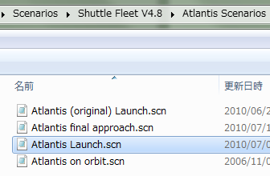

LC39A+B for ShuttleFleet HDのダウンロード・インストール
Shuttle Fleet+ISS v3.2で使える、LC39のディテールアップMODについて解説します。
ダウンロード+インストール
ダウンロードは以下のリンクから。
LC39A+B for ShuttleFleet HD
インストール
まず最初に、ISS v3.2というMODを導入してください。
International Space Station v3.2のダウンロード+インストール
-LC39A-B_HD_ShuttleFleet-26-12-16.zipを解凍して、中に入っているファイル・フォルダをOrbiterのフォルダに上書き。
ISS v3.2のスペースシャトルが出てくるシナリオを開いて、LC39発射台の見た目が変更されていればインストールは成功です。
Ares I-X
Ares I-Xが登場するシナリオを使う場合は、以下のMODも導入してください。
インストールは、ファイルを解凍して中身をOrbiterフォルダに上書きするだけ。
ゲームを開始して、Enterキーを押すと打ち上がります。
使い方
アームの操作などはカウントダウンと連動して全自動で実行されます。
ほとんどの場合、プレイヤーが操作する必要はありません。
キー操作一覧
| Ctrl+L | ライトを点灯 |
| V | ガスを放出する／放出を止める |
| S | RSS（回転式整備構造物）を回転させる |
| K | クルーアクセスアームの展開／収納 |
| G | GOX（気化酸素排出）アームの展開／収納 |
ウォーターカーテン（白い煙）はタイマーと連動しており、手動操作はできません。
シナリオに追加する
このLC39発射台MODを、任意のシナリオに追加する方法を解説します。
今回は例題として、Scenarios\Shuttle Fleet V4.8\Atlantis ScenariosにあるAtlantis Launch.scnを使います。

LC39を追加する
Atlantis Launch.scnを開いて、以下の行を追加する。
LC39A:ISSR\LC39A
STATUS Landed Earth
POS -80.6041380 28.6082950
RSS 0 1.0000 -1
WR 0 0.0000 1
VA 0 0.0000 1
TC 0 0.0000 1
PS_LVL 1.0000 0.0000 0.0000
LIGHT 0
END
LC39B:ISSR\LC39B
STATUS Landed Earth
POS -80.6208780 28.6271250
RSS 0 1.0000 -1
WR 0 0.0000 1
VA 0 0.0000 1
TC 0 0.0000 1
PS_LVL 0.0000 0.0000 0.0000
LIGHT 0
END使わないほうの発射台を設定する
MLP※を消したり、アームを格納したりして、不使用状態の発射台を再現できます。
※Mobile Launcher Platform（移動式発射プラットフォーム）
発射台を指定する行の最後に-NLPを追加すると、MLPが消える。
LC39B:ISSR\LC39B-NLP各種アームを格納状態にする。関連する行をいくつか書き換える。
WR 1 1.0000 -1
VA 0 1.0000 1
TC 0 1.0000 -1
以下の行を追加して、カウントダウンを止める。※
TIMER 0.0000 0.0000 0.0000 0.0000 0.0000 0.0000 0.0000 -5.7863※これをやっておかないと、空の発射台から盛大に白煙が上がります
LC39Aだけを使用する場合は、以下の画像のようになります。
シャトルの位置と向きを合わせる
そのままだとシャトルの位置と向きが微妙にずれてしまうので、これを修正します。
LC39と同じように、スペースシャトルの項目に以下の行を追加・変更してください。
LC39Aの場合
POS -80.6041340 28.6083120LC39Bの場合
POS -80.6207780 28.6271900向き（Heading）はどちらも同じ。以下のように変更する。
HEADING 0.00
LC39の年代を設定する
このMODでは、年代によるLC39の違いを再現しています。
操作方法や機能は変わりません。
LC39A・LC39Bを以下のように書き換える。
1981-1986
LC39A:ISSR\LC39A-1981
LC39B:ISSR\LC39B-1981
1988-1995
LC39A:ISSR\LC39A-1988
LC39B:ISSR\LC39B-1988
1995-2006（デフォルト。変更の必要なし）
LC39A:ISSR\LC39A
LC39B:ISSR\LC39B
2006-2012
LC39A:ISSR\LC39A-2006
LC39B:ISSR\LC39B-2006